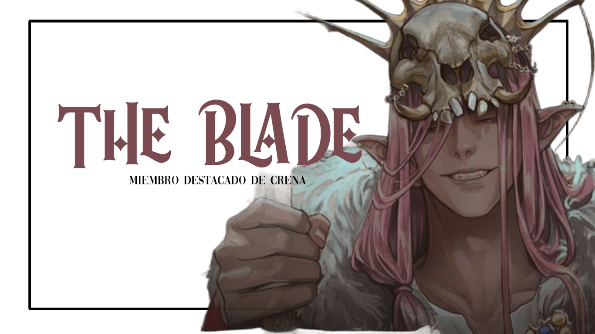

"El dolor no me detiene. Lo arrastro conmigo, como a mis enemigos."
IDENTIFICACIÓN GENERAL
Alias: The Blade
Nombre real: Alex Watson
Designación: Villano
Estado legal: Altamente buscado / No capturado
Clasificación de amenaza: ALFA-X / Letalidad Absoluta en combate físico
Especie: Híbrido de Piglin
Afiliación: CRENA
Ciudad donde opera: Manberg y Pogtopia
Distrito principal de operación: Subdistrito de Ruinas Fronterizas, extremo este
DESCRIPCIÓN FÍSICA
The Blade es un individuo masculino de complexión atlética, imponente presencia física y estatura superior al promedio (estimada en 1.92 m). Su apariencia juvenil sugiere que se encuentra en algún punto de sus veintitantos, aunque su origen híbrido hace imposible determinar su edad biológica exacta. Se le asocia con la línea genética Piglin, una de las especies clasificadas como de alto riesgo en el protocolo Alfa-R, debido a sus capacidades regenerativas y resistencia física sobrehumana.
Su piel es pálida, con un matiz ligeramente rosado, y su cabello largo y de color rosa intenso cae de forma desordenada por debajo de los hombros, a menudo atado en coletas bajas o simplemente suelto durante el combate. Presenta colmillos visibles incluso con la boca cerrada, junto a unas orejas puntiagudas características de su supuesta hibridación. Sus ojos, de un rojo profundo y penetrante, han sido descritos por testigos como “inhumanos” y “desprovistos de misericordia”.
El rasgo más distintivo de The Blade es la máscara ósea que porta constantemente, fabricada con lo que parece ser el cráneo modificado de un jabalí, de tamaño reforzado. Esta máscara ha sido vista tanto en combate como en desplazamientos tácticos, sugiriendo que forma parte integral de su identidad y no solo de su armamento psicológico. Según testigos, nunca ha sido visto sin ella.
En combate, suele portar un arma pesada de dos manos, alternando entre una hacha de netherite y una espada de la misma aleación, ambas forjadas con tecnología no autorizada, de origen infernal. Las armas están adaptadas a su fuerza bruta, siendo ineficaces para el uso de humanos ordinarios. Se sospecha que su cuerpo ha sido modificado o endurecido para sostener su uso constante sin fatiga aparente.
El sujeto viste generalmente con ropas oscuras, reforzadas con placas metálicas negras, probablemente netherita, lo que le confiere una resistencia táctica adicional. Su estilo visual remite a figuras de guerra ancestral, lo que, combinado con su brutalidad en combate, le ha ganado el apodo no oficial de “El Dios de la Sangre” entre unidades de la Torre.
PERFIL PSICOLÓGICO
PERFIL PSICOLÓGICO – THE BLADE
Clasificación de Riesgo Psicológico: CR-9 – Disociación Cognitiva con Tendencias Anarquistas Extremo-Violentas
The Blade ha sido evaluado como uno de los sujetos más inestables, letales y mentalmente desconectados dentro del espectro criminal contemporáneo. Su perfil representa una amenaza multifacética que combina una ideología anarquista destructiva, habilidades físicas inhumanas y una fragmentación mental activa. A diferencia de otros miembros de CRENA, The Blade no actúa por venganza ni justicia: actúa por convicción absoluta de que el orden debe arder. No es simplemente un hombre que busca el caos; es el caos personificado. Su presencia genera una disonancia inmediata en la percepción del mundo, pues las estructuras sociales, políticas y religiosas son nada menos que objetivos de su destructiva visión del futuro.
Características centrales
- Desvinculación total del orden institucional: The Blade no solo rechaza el sistema establecido, sino que lo odia profundamente. No cree en la redención, ni en la moral, ni en el sistema de reglas humanas. Su actitud ante la vida es la de un hombre que ve las normas como cadenas que atan la esencia humana a un falso orden. Su rechazo no es pasivo; es militante, rebelde. Su anarquismo no es teórico, es práctico: cada edificio que cae, cada estructura que se colapsa por su hacha, es una declaración de guerra contra el concepto de autoridad. El concepto de justicia es un mero subproducto de la opresión humana y, para él, cualquier intento de organizar la sociedad es una blasfemia. Es un hombre que desea destruir todo lo que crea limitaciones, no solo para sí mismo, sino para cualquier ser que aspire a la libertad verdadera.
- Voz interna ("Chat"): Se ha observado que The Blade mantiene conversaciones prolongadas con una voz que él denomina "Chat". Esta voz no parece una alucinación pasajera, sino una entidad constante que acompaña sus decisiones. El diálogo entre ambos parece ser de una naturaleza profundamente íntima, casi como si “Chat” fuera una extensión de su propia psique. Algunos miembros de CRENA creen que esta voz es su verdadero don, el vehículo de su verdadera voluntad. Otros lo interpretan como un síntoma de esquizofrenia funcional. Sin embargo, lo cierto es que The Blade no está solo, ni siquiera cuando lo está. Esta voz parece darle dirección, claridad y propósito, aunque en ocasiones sus instrucciones parecen estar encaminadas a intensificar su caos interior. A través de esta voz, él justifica sus actos y recibe lo que percibe como una validación de su misión. En momentos de agitación extrema, algunos informes sugieren que esta "entidad" podría ser incluso responsable de influir en sus decisiones más irracionales o violentas.
- Trance de combate eufórico: En combate, The Blade entra en un estado que raya en lo extático. No es que la violencia lo excite, sino que la ve como un acto de liberación, como un sacrificio necesario para alcanzar su propio equilibrio. Sonríe mientras destripa. Ríe mientras es herido. La lucha se convierte en una danza, no con la finalidad de vencer, sino con la de purificar. No lo excita la violencia... pero la acepta como parte inevitable del acto de liberación. Cada golpe, cada corte, cada herida que inflige o recibe, forma parte de un proceso transcendental que lo conecta con su visión de lo que el mundo debería ser. Su forma de luchar transmite un mensaje: “Nada importa salvo el colapso”. De alguna manera, ve la muerte no como un final, sino como una puerta hacia una existencia más libre, más auténtica. Este trance de combate lo convierte en una máquina letal, casi indestructible, que no se detiene ante nada.
- Insensibilidad emocional absoluta: No muestra remordimiento. No muestra afecto. Sus palabras son cortantes, su presencia es asfixiante, y su juicio final es inmediato. No dialoga. No persuade. Ejecuta. La idea de "conversar" o "negociar" es inconcebible para él. Cada interacción se ve como una posibilidad de perder tiempo, pues para The Blade no existe valor en los intercambios humanos convencionales. Su visión del mundo está completamente fragmentada de la realidad emocional tradicional: no cree en el amor, no cree en la empatía. Lo que la sociedad considera valores fundamentales, como el respeto y la compasión, son simples construcciones sociales que él no ve como legítimas. Cuando habla, lo hace con frases absolutas, sentencias definitivas que rara vez contienen compasión. Su juicio es inflexible y despiadado: el orden debe caer, y si las circunstancias requieren que sea él quien lo derrumbe, lo hará sin dudar.
- Teoría del caos funcional: A diferencia de otros anarquistas que buscan un nuevo orden en medio del caos, The Blade no busca imponer un nuevo sistema ni liderar una revolución. Cree que la destrucción es el único equilibrio verdadero, y que cualquier intento de controlar el mundo es arrogante y condenable. No quiere gobernar sobre cenizas. Quiere asegurarse de que nadie más pueda construir sobre ellas. La idea de un mundo nuevo, ordenado, es tan opresiva como el viejo mundo al que combate. La anarquía pura, la destrucción total del orden, es la única forma que él considera legítima para el futuro. En este sentido, su visión es radicalmente nihilista: no hay esperanza de reconstrucción. Solo queda el vacío y el colapso.
Tendencias peligrosas adicionales
- Conducta de animal territorial: Como híbrido de piglin, su cuerpo actúa con instinto cuando se siente acorralado. Lo que comienza como una confrontación puede volverse una matanza si se siente amenazado. Su fuerza se multiplica. Su raciocinio desaparece. En esos momentos, The Blade ya no piensa. Solo existe para aniquilar. Su cuerpo, parcialmente híbrido, entra en un estado de animalidad cuando percibe una amenaza. En estos momentos, su humanidad parece desvanecerse y la bestialidad toma control total de sus acciones. Es capaz de cometer actos de violencia extrema y devastadora sin sentir remordimiento ni reflexión. Esta transformación lo hace aún más peligroso, pues no sigue un patrón lógico, sino que actúa exclusivamente por instinto.
- Auto-percepción de invencibilidad: Su capacidad regenerativa ha creado en él una percepción casi mesiánica de su resistencia. Ha sido visto avanzando con órganos expuestos, huesos fracturados y la mandíbula desencajada, sin detenerse. Esto ha provocado que subestime amenazas y también que suba la vara de lo que considera un “enemigo digno”. Esta resiliencia lo ha llevado a tomar decisiones impulsivas y a enfrentar desafíos que otros considerarían suicidas. Este tipo de pensamiento lo convierte en un sujeto extremadamente impredecible y peligroso, pues su invulnerabilidad aparente lo lleva a subestimar peligros que podrían ser fatales para cualquier ser humano normal.
- Rituales personales antes de la batalla: Siempre afila su arma en silencio antes de una confrontación. No por necesidad... sino por ceremonia. Para The Blade, el acto de matar no es violencia. Es limpieza. Es purificación. Cada herida que deja es un juicio. Cada corte, una respuesta a una pregunta que nadie hizo. Este ritual no es una superstición, sino un acto consciente de preparación mental para lo que él percibe como un acto sagrado. Al afilar su hacha, se concentra en su misión: destruir, purificar, eliminar todo aquello que considera innecesario. Este rito tiene un profundo significado para él, pues le permite entrar en el estado de trance que necesita para llevar a cabo su trabajo con la máxima efectividad.
- Vínculo con "el Ángel de la Muerte" y "Siren": Se sospecha que The Blade está ligado por lazos familiares con otros dos miembros de CRENA: Siren y El Ángel de la Muerte. Aunque ninguno ha confirmado esto de forma pública, las interacciones observadas entre ellos sugieren un respeto no verbal, una confianza mutua demasiado precisa para ser casual. Es posible que los tres compartan un pasado trágico o una herencia de traición vinculada al sistema heroico. Estos vínculos familiares sugieren una compleja red de relaciones que podría ser un factor determinante en el comportamiento de The Blade. Si bien no hay certeza sobre la naturaleza de estos lazos, las conversaciones entre ellos suelen cargarse de un tono que sugiere que, en el fondo, comparten una ideología común: la destrucción del orden establecido.
- Trastorno obsesivo hacia la destrucción del sistema: The Blade no actúa por dinero, ni por gloria. Solo por una obsesión inflexible: borrar todo rastro de la Torre del Héroe. Ha atacado bases, asaltado caravanas, destruido registros civiles y eliminado investigadores solo porque estaban vinculados, aunque fuera de forma indirecta, con esa institución. Su odio no es emocional: es estructurado. La Torre del Héroe representa la opresión para él, y cualquier cosa que esté vinculada a ella debe ser eliminada. Su cruzada personal no tiene límites ni redención. Es un ciclo de destrucción que no cesa.
Evaluación final
The Blade no debe ser abordado como un criminal común ni como un villano con motivaciones personales. Es un sujeto con una visión distorsionada del mundo, pero con una coherencia interna devastadora. No busca atención. No desea control. Solo quiere eliminar todo aquello que impida la libertad total, sin importar cuántos cuerpos deje en el camino. Cada uno de sus actos, cada ataque que lleva a cabo, es una manifestación de su profunda creencia en la necesidad de erradicar el sistema establecido.
Su disociación con la realidad social, su vínculo mental con una voz interna que parece guiarlo, y su brutalidad sin límite, lo convierten en un individuo de altísima prioridad. La existencia de otros miembros de CRENA que podrían ser su familia solo agrava la situación, pues se desconoce qué tan profundo es ese vínculo, y qué podrían hacer si uno de ellos cae. The Blade no es un monstruo. No porque no lo sea… sino porque esa palabra ya no le hace justicia. Es un colapso en forma de hombre. Una grieta en el concepto de humanidad. Una herida abierta que camina con una máscara de hueso y una voluntad irrompible.
ANÁLISIS DETALLADO: HABILIDADES Y PODERES DE THE BLADE
Informe elaborado por: Departamento de Evaluación Estratégica – División de Híbridos No Registrados (CJTO)
Clasificación del sujeto: Máximo Riesgo / Clase Crimson-R / Prioridad Operativa 1
1. Don Primario – “Voz de Guerra”
Naturaleza: Condicional / Cognitiva / Canalizada
Descripción: Aunque durante años se pensó que el don de The Blade residía en su regeneración brutal o resistencia inhumana, análisis recientes sugieren que su verdadero don no se manifiesta físicamente, sino a través de una entidad mental que él denomina "Chat". Esta voz interna parece tener un rol de comando, análisis y dirección en combate. No es una alucinación común: actúa como un sistema táctico que opera desde el subconsciente del sujeto y que ha demostrado influir directamente en sus decisiones, reacciones e incluso resultados en batalla.
- Efecto observable: Reacción anticipada a movimientos enemigos. Cambios de estrategia instantáneos sin análisis lógico visible. Discursos autoguiados en medio de combate, sin contacto con ningún comunicador externo. Ausencia total de miedo, incluso en situaciones de muerte inminente.
- Evaluación táctica: El don de The Blade convierte su mente en un campo de batalla interno, pero con una ventaja: nunca está solo. La entidad “Chat” parece tener acceso a información estratégica en tiempo real o una conciencia expandida que lo protege de errores humanos comunes.
- Contramedida recomendada: Bloqueadores cognitivos, interferencia sensorial extrema y aislamiento prolongado en celdas de supresión psíquica. Evitar confrontaciones verbales prolongadas. No responder a provocaciones dirigidas “a Chat”.
2. Hibridación – Especie: Piglin
Descripción: The Blade presenta rasgos físicos y biológicos que lo clasifican como híbrido piglin: una de las especies más antiguas, agresivas y naturalmente adaptadas al combate cuerpo a cuerpo. Su hibridación no solo le otorga fuerza descomunal y reflejos superiores, sino una resistencia antinatural al dolor y la muerte.
- Estructura ósea reforzada: Fracturas menores no afectan su movilidad.
- Colmillos funcionales: Uso ofensivo en enfrentamientos cuerpo a cuerpo.
- Piel de alta resistencia térmica y física: Puede resistir quemaduras, cortes y hasta explosiones de corto alcance.
- Regeneración avanzada (biológica, no mágica): Reconstrucción de tejidos y músculos en cuestión de minutos.
- Desconexión nerviosa parcial: El dolor no lo detiene, y su umbral es casi inexistente.
- Estabilidad térmica: Puede pelear en ambientes extremos sin descompensarse.
- Evaluación táctica: El cuerpo de The Blade es un arma en sí misma. A diferencia de otros híbridos, su fisiología lo convierte en un tanque de asalto que no necesita descanso, ni precaución, ni miedo.
3. Competencias en Combate
Entrenamiento y experiencia: Entrenado por CRENA desde la adolescencia. Se cree que su instrucción fue llevada a cabo bajo condiciones de tortura y guerra psicológica, lo que forjó su estilo salvaje pero quirúrgicamente eficaz.
- Dominio de armas pesadas: Manejo de hachas, espadas de netherite y herramientas de ejecución.
- Fuerza bruta controlada: Puede partir un blindaje con una sola estocada, pero también controlar su fuerza para amputaciones quirúrgicas.
- Velocidad impredecible: A pesar de su complexión pesada, sus movimientos son rápidos, erráticos y salvajes.
- Lectura del entorno inmediata: Usa cualquier elemento a su favor: estructuras, clima, oscuridad, humo, cadáveres.
- Estilo de combate basado en demolición: No pelea para ganar. Pelea para aniquilar.
- Manipulación psicológica en combate: No habla con sus enemigos... salvo que quiera romperlos. Cuando lo hace, sus palabras son cortantes, crudas, deshumanizantes. Desactiva emocionalmente a su oponente antes de matarlo.
4. Factores de Peligro Adicional
- Impredecibilidad animal: En combate prolongado, The Blade entra en un estado de trance berserker. En este estado, no distingue entre aliados y enemigos si no son reconocidos de inmediato por “Chat”.
- Ausencia total de límites: Se ha lanzado desde edificios, cruzado explosiones y aceptado heridas fatales sin dudar. No teme a la muerte. La busca como parte del proceso.
- Capacidad de absorción moral: Ha cometido actos de tortura prolongada, ejecuciones públicas y destrucción masiva sin mostrar signos de culpa, remordimiento o efecto postraumático.
- Inestabilidad emocional invisible: Aunque parece frío y centrado, los informes lo muestran hablando solo, riendo en medio de la sangre, y compartiendo pensamientos con una “voz” que no responde a ningún transmisor.
- Relaciones peligrosas: Se cree que The Blade tiene lazos familiares con Siren (William Watson) y el Ángel de la Muerte (Phil Watson). Aunque esta teoría no ha sido confirmada, los tres comparten patrones genéticos similares y operan con una sincronía que sugiere entrenamiento conjunto desde la infancia.
5. Evaluación General
The Blade no puede ser descrito como un guerrero. Tampoco como un psicópata. Es una tormenta con piernas. Su cuerpo está diseñado para matar, su mente para destruir estructuras de poder, y su voluntad para ignorar cualquier otra cosa que no sea su objetivo inmediato.
Más que un enemigo, The Blade representa un fenómeno de destrucción táctica con voluntad propia. Su resistencia, regeneración, y la presencia de un “don” que habita en su mente lo convierten en un enemigo imposible de predecir con lógica humana.
Debe ser considerado de prioridad absoluta en cualquier encuentro de campo. Cualquier misión que involucre su captura o confrontación directa deberá estar equipada con inhibidores cognitivos, barreras físicas reforzadas, apoyo de múltiples clases de combate, y al menos un operador con autorización para detonación remota del entorno.
ALIANZAS CONFIRMADAS
- Nemesis: Colaboración táctica recurrente. Nemesis diseña las rutas de infiltración y contención, mientras The Blade se encarga de la ejecución directa. Su sincronización es brutalmente eficiente, dejando cero margen de respuesta al enemigo.
- Siren: Relación operativa de alto riesgo. Siren provoca el caos sensorial y psicológico, y The Blade se lanza durante ese descontrol como fuerza de aniquilación. Su cooperación ha resultado en exterminios totales en zonas de contención avanzada.
- El Ángel de la Muerte: Sincronización casi automática. No necesitan comunicarse. Cuando ambos están en campo, las probabilidades de colapso estructural aumentan drásticamente. Se sospecha que han sido entrenados juntos desde su juventud.
- Dream: Colaboran en maniobras de distracción y desorientación. Dream genera múltiples entidades ilusorias, y The Blade las convierte en un espectáculo de carnicería organizada. Su estilo conjunto confunde sensores, radares y análisis térmicos, permitiendo ataques sin detección previa.
INCIDENTES DOCUMENTADOS
▼ 22 de enero de 2045 – Incidente “Sangre de Acero”
Ubicación: Base Avanzada de la Torre, Subdistrito 11
Resumen: Durante una operación rutinaria de inspección médica en una base de la Torre, The Blade irrumpió sin previo aviso. Se reportó el uso de un arma de netherita a corta distancia. Cuerpos fueron encontrados con signos de desmembramiento quirúrgico.
Resultado: 17 muertos, cierre indefinido de la base, pérdida de documentos médicos confidenciales.
▼ 3 de abril de 2045 – Masacre del Sendero Rojo
Ubicación: Ruta 8, conexión entre Zenith y Éther
Resumen: The Blade emboscó un pelotón de transporte de prisioneros híbridos. No hubo supervivientes. La carretera quedó sellada durante semanas por contaminación biológica no identificada. Se hallaron símbolos grabados en huesos.
Resultado: 11 guardias muertos, 24 prisioneros liberados, 2 no localizados hasta la fecha.
▼ 16 de septiembre de 2046 – “La Tumba Silenciosa”
Ubicación: Túneles del Sector K-Delta
Resumen: La Torre intentó usar túneles subterráneos para moverse sin ser detectada. The Blade, junto con apoyo táctico de Dream y Siren, colapsó los túneles con explosivos y enfrentó al equipo en condiciones de baja visibilidad. No se reportaron disparos: todas las muertes fueron por armas blancas.
Resultado: 9 agentes eliminados, pérdida del control del túnel durante 4 meses.
▼ 12 de febrero de 2047 – Intervención “Trinchera de Cobalto”
Ubicación: Zona neutral minera al sur de Las Nevadas
Resumen: Se intentó detener a The Blade durante una transacción de recursos con Nemesis. La emboscada fracasó. Dos unidades fueron decapitadas y una tercera perdió el habla tras contacto visual prolongado. Se sospecha manipulación indirecta de Siren.
Resultado: Misión abortada. Reasignación forzosa de la zona a vigilancia remota.
▼ 30 de julio de 2047 – Exterminio “Tormenta Carmesí”
Ubicación: Refugio Heroico de Emergencia C-12
Resumen: Durante una evacuación masiva de civiles, The Blade penetró el perímetro. Se confirmó el uso de una espada de netherita. El escuadrón de protección fue eliminado en 3 minutos. No se robó nada, lo que sugiere motivación simbólica o represalia.
Resultado: 6 héroes muertos, 2 civiles desaparecidos, estructura abandonada.
▼ 8 de diciembre de 2047 – Ejecución “Castillo Negro”
Ubicación: Fortaleza experimental de la OPG
Resumen: The Blade se infiltró disfrazado como personal médico. Una vez dentro, esperó 36 horas antes de ejecutar a tres científicos responsables de un proyecto de control genético híbrido. El lugar fue sellado tras el hallazgo de sus cuerpos empalados en la entrada.
Resultado: Instalación destruida, proyecto cancelado, inicio de represalias diplomáticas entre la OPG y la Torre.
ÚLTIMA UBICACIÓN
Zona: Región Boscosa del Valle Caído (frontera entre zonas neutrales y dominio CRENA)
Avistamientos confirmados: No (último reporte visual inconcluso y no verificado)
Recompensa: Nivel máximo (clasificado, acceso restringido a nivel Omega-4)
Organismos en búsqueda: Torre del Héroe, OPG, Unidad de Vigilancia Transversal, División Psi-Criminal
PROCEDIMIENTO DE INTERVENCIÓN – SUJETO: THE BLADE
Clasificación Operativa: Crimson-S / Hostil Prioridad 1
División Responsable: Dirección General de Seguridad Heroica – Unidad de Respuesta Contra Amenazas Internas (URCAI)
Última actualización: 28 de febrero de 2053
Estatus actual: Activo / No capturado / Alta peligrosidad
I. Consideraciones Iniciales
The Blade representa una amenaza física y estratégica de escala letal. Su resistencia, regeneración y brutalidad lo colocan entre las amenazas más complejas de neutralizar. Se sospecha que su don no está vinculado a su fuerza física, sino a una entidad o fenómeno mental al que él se refiere como “Chat”, cuya naturaleza aún no ha sido determinada.
⚠️ Advertencia operativa: No se recomienda la intervención directa a menos que el Héroe Escarlata esté presente, o que al menos el Top 10 completo de la Torre se encuentre desplegado en el área. La tasa de éxito de contención sin esas condiciones es estadísticamente nula.
II. Requisitos previos de intervención
- Unidad mínima requerida: Escuadrón clase OMEGA-7 (mínimo 7 operativos con inmunidad a trauma físico o psicológico).
- Apoyo táctico externo: Unidades de contención reforzada, inhibidores biológicos, drones de rastreo con visión térmica y monitoreo constante.
- Equipamiento obligatorio:
- Armaduras anti-perforación de grado 5 o superior.
- Armas contundentes o disruptores sónicos. Las armas cortantes o proyectiles comunes son ineficaces.
- Sistemas de anulación sensorial para evitar desorientación generada por su estilo de combate impredecible.
- Prohibiciones críticas:
- No permitir confrontaciones individuales bajo ninguna circunstancia.
- Evitar provocar diálogos prolongados; puede entrar en un estado psicótico durante intercambios verbales.
- No intentar la contención si el sujeto se encuentra en estado de exaltación o durante su “diálogo con Chat”.
III. Protocolo de Contención y Confrontación
Fase 1 – Neutralización de Movimiento: The Blade opera con una movilidad anormalmente agresiva. Es vital:
- Restringir zonas abiertas. Forzar el combate a entornos cerrados donde no pueda maniobrar con su hacha o espada de netherite.
- Utilizar su propia agresividad como trampa, aislándolo progresivamente de aliados o rutas de escape.
- Evitar agrupaciones de escuadra: sus ataques giratorios pueden incapacitar múltiples objetivos en segundos.
Fase 2 – Interrupción de Regeneración: Aunque no se ha confirmado si su regeneración es producto de su biología o don, se han identificado posibles inhibidores:
- Radiación dirigida de pulsos electromagnéticos de baja frecuencia.
- Exposición a ambientes con presencia de esporas tipo 404.
- Desmembramiento múltiple sincronizado (únicamente viable si se ejecuta en menos de 3 segundos).
Fase 3 – Saturación de Estímulos: The Blade demuestra una resistencia sobrehumana al dolor físico, pero responde negativamente a la sobrecarga sensorial.
- Utilizar granadas sónicas, flashes encadenados y ruido blanco de alta intensidad.
- Evitar silencio absoluto: los episodios de “charlas con Chat” aumentan en entornos sin estímulos externos.
Fase 4 – Coordinación Táctica: La intervención requiere una estructura táctica dividida:
- Escuadra de distracción – encargada de forzar al objetivo a usar su fuerza física sin control.
- Escuadra de captura – equipada con anclajes electrohidráulicos.
- Operadores psico-estables – monitoreo en tiempo real de su conducta verbal por posibles pistas de activación del don.
IV. En caso de captura exitosa
- Transportar en cápsula de reclusión triple capa con restricción neuromuscular.
- Ubicación de contención en entorno frío, subterráneo, con iluminación continua y sin espejos o superficies reflectantes.
- Rotación de celadores y psicólogos cada 36 horas.
- Prohibido el contacto verbal directo. Las conversaciones deben realizarse mediante interfaz automatizada y con monitoreo lingüístico de IA.
V. En caso de fallo de misión
- Iniciar protocolo de confinamiento extendido del perímetro durante mínimo 72 horas.
- Revisar condiciones psicológicas de todo el equipo actuante, priorizando signos de disociación o ideación anarquista post-contacto.
- Destruir armamento o indumentaria que haya sido tocada por el objetivo, para evitar contaminación psicoactiva residual.
- Informar a CRENA sobre la fallida intervención solo si se detectan represalias inminentes.
VI. Riesgo de expansión ideológica
The Blade posee un discurso anarquista que ha demostrado ser infeccioso entre objetivos vulnerables. Se han identificado al menos 12 casos de desertores o infiltrados en la Torre que justificaron sus acciones citando frases del sujeto. Cualquier unidad expuesta a él debe pasar por reprogramación cognitiva de nivel 2 tras el contacto.
CONCLUSIÓN
The Blade no es simplemente un objetivo: es una disrupción viviente. Su existencia desafía los protocolos, el orden institucional y la moral operativa. Capturarlo es una misión de alta prioridad, pero nunca debe ejecutarse sin preparación completa. Si Escarlata no está en el terreno, retrocedan. Si el Top 10 no está en línea… no entren.